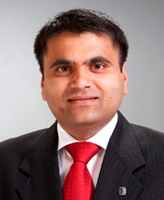
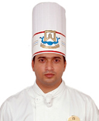

Testimonials by Alumni / Students
|  | Manjit Singh (Batch: 1996-99) Vice President Jones Lang LaSalle Meghraj |
| " I had a great time at MSRCHM. I still love keeping in touch with the College. A few years back Facility Management Career was quite unconventional, yet today I find many hotel management graduates having a lucrative career in this field. As Vice President of my company, I owe a great deal of my success to my alma mater and have provided employment to many from my college. " | |
|  | AdityaRaj Singh Sisodia (Batch: 2003-07) Sous Chef Move N Pick Hotels, Dubai |
| " The realization of my dream to become a Chef in a reputed hotel was in fact the result of an extra-ordinary amount of freedom and opportunities to explore and enhance my skills at MSRCHM. As a Sous Chef in Move N Pick Hotels, I am thoroughly enjoying a very rewarding career. " | |
| Lohith Gowda (Batch: 2004-08) Asst. Dept. Manager METRO, Bangalore |
|
| " Hospitality Management Graduates have such a wide choice today! Airlines, Cruise Lines, Facility Management, Retailing, Banking, Insurance, Event Management, etc. are all avenues open to us. Here I am, currently placed comfortably in a German based Retailing Company - METRO, well-known all over the world. " | |
| Vipin Chandran (Batch: 2005-09) Management Trainee ITDC-Delhi |
|
| " In the present economic scenario getting into the Public Sector is really an awesome opportunity. I enjoy a very exciting and a rewarding career as Management Trainee at the ITDC- Delhi. " | |
| Jibin Thomas 8th Semester BHM – 2010-11 |
|
| " The intensive training I received at the state of the art facilities and with the able support of the excellent faculty have been stepping stones towards my dream of becoming Food and Beverage Service Professional. I am also proud to be short listed by The Park, The Lalit Ashok, The Accor, Lemon Tree and The Taj, as Management Trainee. The numerous inter & inter collegiate competitions – we have at the MSRCHM & cultural events as well- have definitely contributed to making me good management material. " | |
| Peeyush Bhushan 8th Semester BHM – 2010-11 |
|
| " Being one of the several students fortunate to receive the six months Industrial Training at The ITC Maratha, Delhi, I had an edge over the others at the TMPT, the flagship Management Training programme of the Taj Group of Hotels and MT Program at The Westin (Starwood Hotels). My experiences on the GOLDEN CHARIOTT were really worth cherishing. The last 4 years was like a dream journey- work and fund going hand in hand every day. Looking back- I have had the privilege of being tested for my skills and trained specially for several events & competitions. MSRCHM – definitely the best place to be….!! " | |
| Arun Kumar 8th Semester BHM – 2010-11 |
|
| " I am in the 4th year and I am fortunate to have received the merit scholarship that MSRCHM offers to the students with outstanding academic achievements at university level. Besides this, the Technical Development, the Personality Development and the VACE (Value Added College Education) Programme have greatly encouraged my all-round development that I am confident of doing very well at the Campus Interviews next year. The Industry Visits, Seminars, workshops, Guest Lectures by Industry Professionals keep us updated about the developments in the Hospitality Industry. " | |
| Mohit 8th Semester BHM – 2010-11 |
|
| " During my initial search for the best hotel management college in India, Manish one of my seniors from my hometown in Bihar said that MSRCHM, one of the top 10 hotel management colleges in India, with its excellent infrastructure and professionally experienced faculty was the best option. I am glad that I took his advice. I have seen for myself the stupendous transformation Manish has made over the years in his language skills and self-confidence. I am also really excited and looking forward to the new plush CAMPUS that is slated to be ready by the next academic year. " | |
| Suchitra Ganeshan 6th Semester BHM – 2010-11 |
|
| " I am happy and proud to be an MSRCHIAN! The last 2 years have been truly memorable for me. The co - curricular activities like the inter and intra college competitions, club activities and also being House Captain have given me opportunities to express and explore my organizational and leadership skills. Since MSRCHM has students from all over the world, we also learn a lot about other cultures and diversity, giving us valuable experience and insight for our future as a "Hospitality Person". Here I found an outlet for my creative urges, and opportunities that were wholesome and fulfilling. My opportunities to work with The Oberoi, Bliss Chocolates on a part-time basis will definitely enhance my career opportunities. " | |
| Rithwik 6th Semester BHM – 2010-11 |
|
| " I’ll never forget my training at Vatel Institute of Culinary Arts, Nimes, France, a privilege we enjoyed only because of joining MSRCHM. I enjoyed the privilege of the 3 months training at the institute in France, the Food Capital of the world. It was a memorable experience- the most enlightening. "Earn while you Learn" a concept adopted by MSRCHM helped me and others like, Prerana, Sarang, Umang, Supreet, Karan, Tanmay, Abhilash Shetty, etc, j to pick part-time jobs at ITC Windsor, Taj West End, Ista et al. " | |
| Smriti Aryal 6th Semester BHM 2010-11 |
|
| " The hottest of all Hotel Management Campuses is definitely the MSRCHM campus- situated in the heart of the city, it has all the best of leading Banks, Shopping Malls, International Food-chains, Multi-Cuisine eateries, and the campus owned super speciality hospital, within easy reach. The hostel scene is also really cool with ample choice for everyone. So, though I am really far from home, my parents have no apprehensions about my well-being. Besides, the Student Information System (SIS) with regular inputs from college about attendance and academic progress always keeps them updated. " | |
M.S.Ramaiah College of Hotel Management, M.S.Ramaiah Nagar, MSRIT Post, Bangalore, Karntaka, India 560054 | Tele. 080 23601829 | Tele Fax 080 23601815